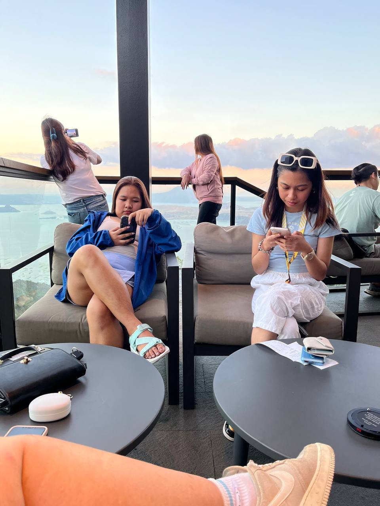
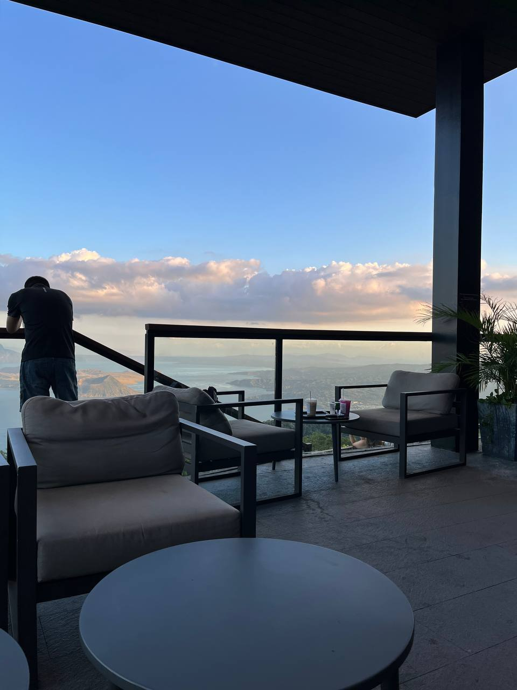
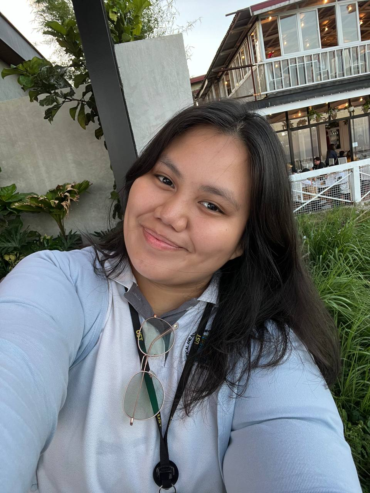
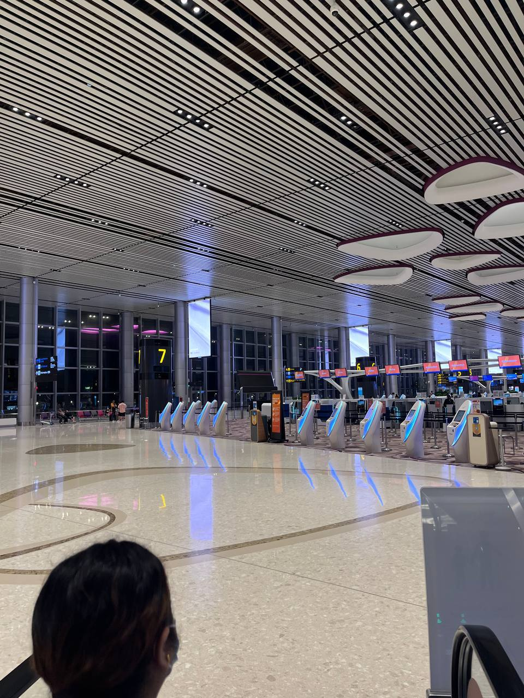
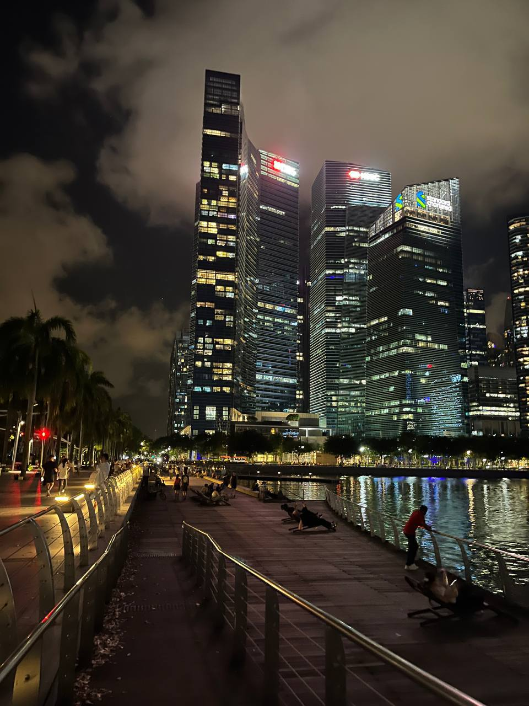
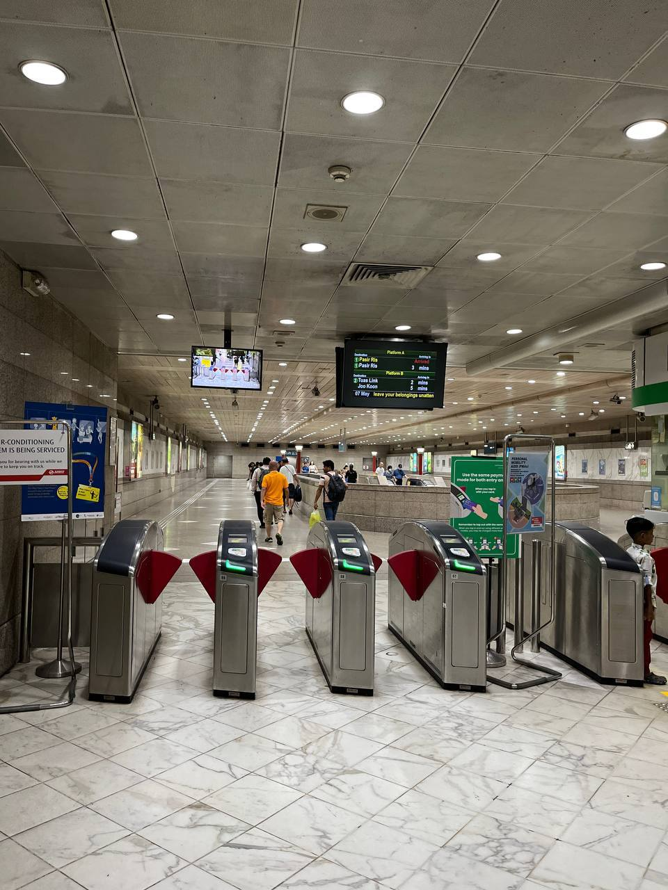
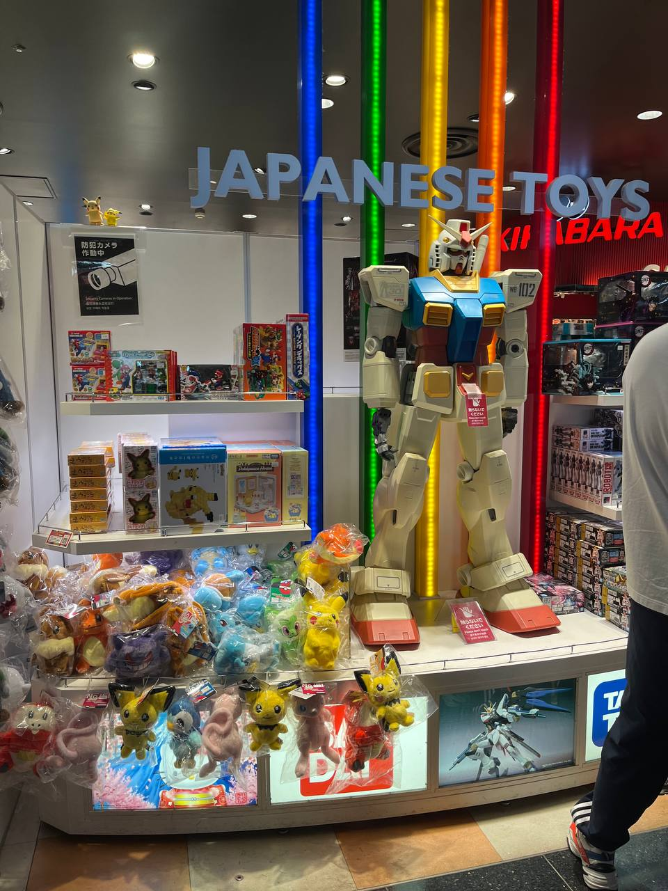
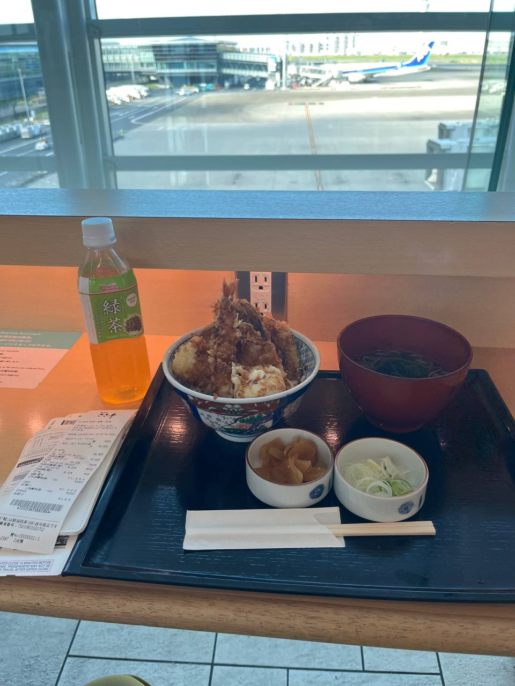
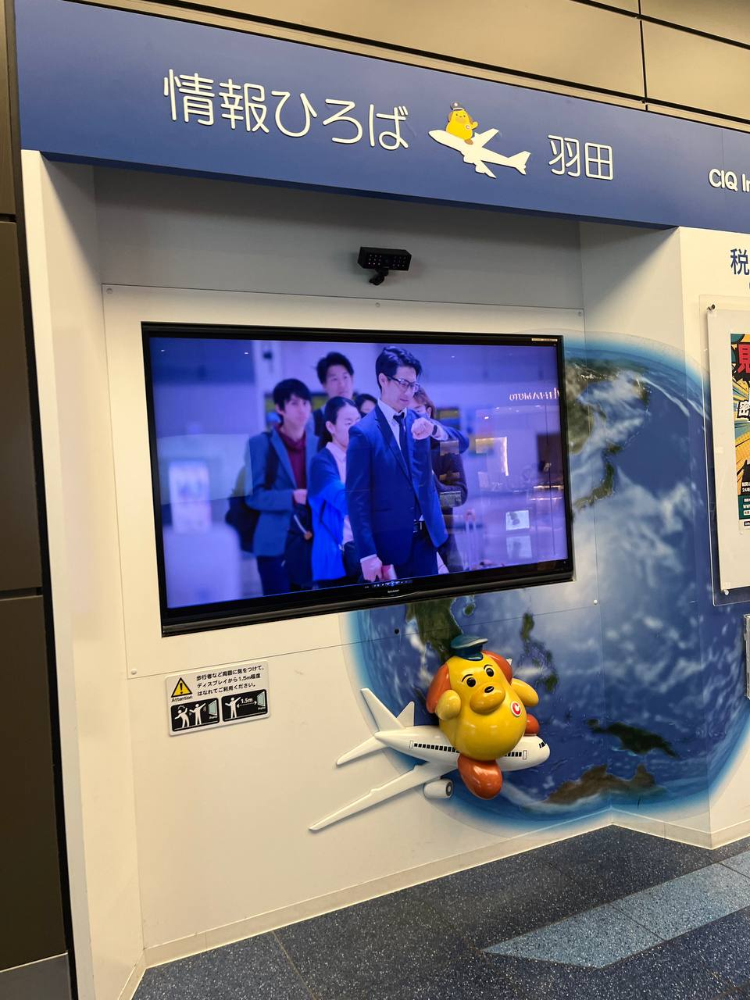

So far I have went to...
-
Philippines
I was born and raised in the Philippines. However, my family and I don't travel a lot for reasons I don't know. That's why every time I got a chance in college, I always said yes to my friends. We went to Tagaytay, a tourist spot in the Philippines known for its cold climate and a lot of cool places.
  
One of its known places, that we went to, is the Starbucks Hiraya where you can view the Taal volcano. -
Singapore
I went to Singapore for the 2nd time for 1 week because my relatives and to meet some of my online friends. As much as I wanted to put a lot of pictures but I'll just put some of the places I went to that I found really nice.
  
First picture is the Changi airport. I'm amazed at how big it is, well at least compared to the NAIA airport from Philippines. Second is from Marina Bay Sands. You get to see a view of a lot of buildings and the water. Third one is a typical MRT station at Paya Lebar. I met my friends there. -
Japan
I only went here for a layover but it was for 5 hours so I got to explore the Tokyo Haneda airport.
  
I loved everything in the airport from the gift shop items, to food, to the different fun stuff you can see there.